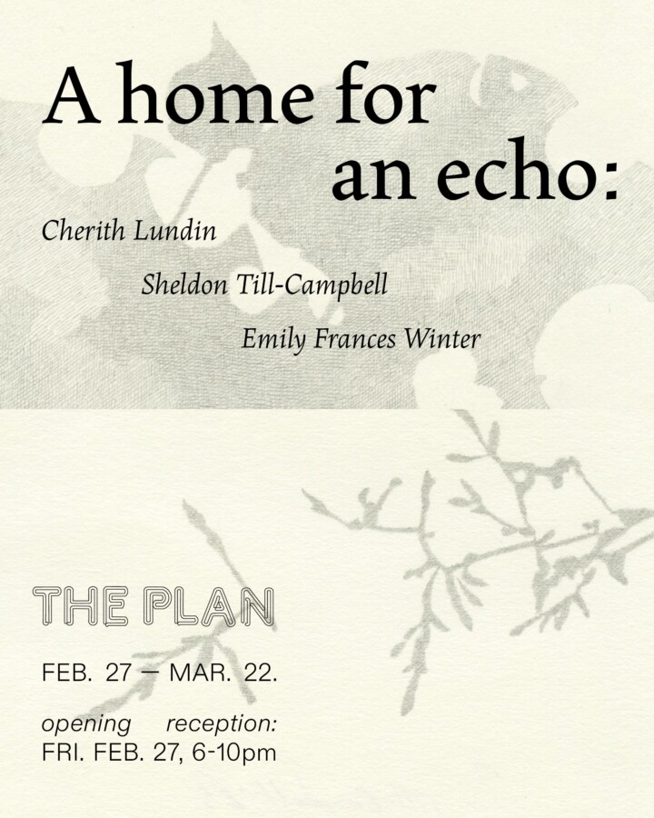

A home for an echo
A conversation with pauses and spaces. About receptivity, listening, space and light, skilled labor, embodied knowledge, pocket maps, simple fascination with the visible…
How long does it take to understand a moment? And how much work and how much patience does it take to “follow a thought quietly to its logical end?”
We’ve been meeting in each other’s studios for a year now, carrying on a conversation in response to the work and our particular fascinations and commitments. This exhibition brings our work together in shared space for the first time – a space to listen for subtle resonances.